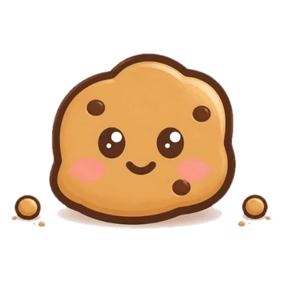

お店の口コミ、
おみくじ
クッキーで
育てます！
GBP 口コミ施策｜もったいない.jp

↓
口コミ、
書いてほしいけど…
⭐
💬
📍
📷
お願いするのは、ちょっと気まずい。
お客さんも、何を書けばいいか迷う。
手が出ないですよね。
3
ステップで完成
1
QRコードを読む
箱のシールやPOPから、スマホでそのまま。
2
クッキーを割って占う
今日の運勢と、お菓子のキャラが出てきます。
3
質問に答えると口コミが育つ
できた文章をコピーして、Googleマップへ。
やっている
お店
Sweet Season ririo
おみくじクッキー × 口コミ
ページを見る →